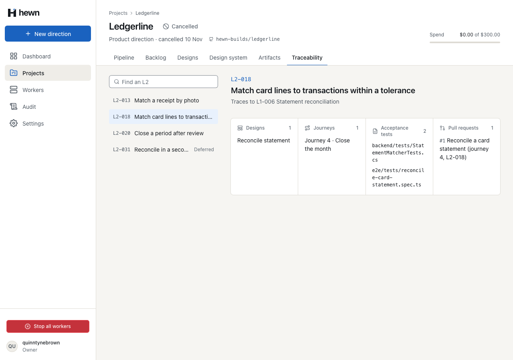
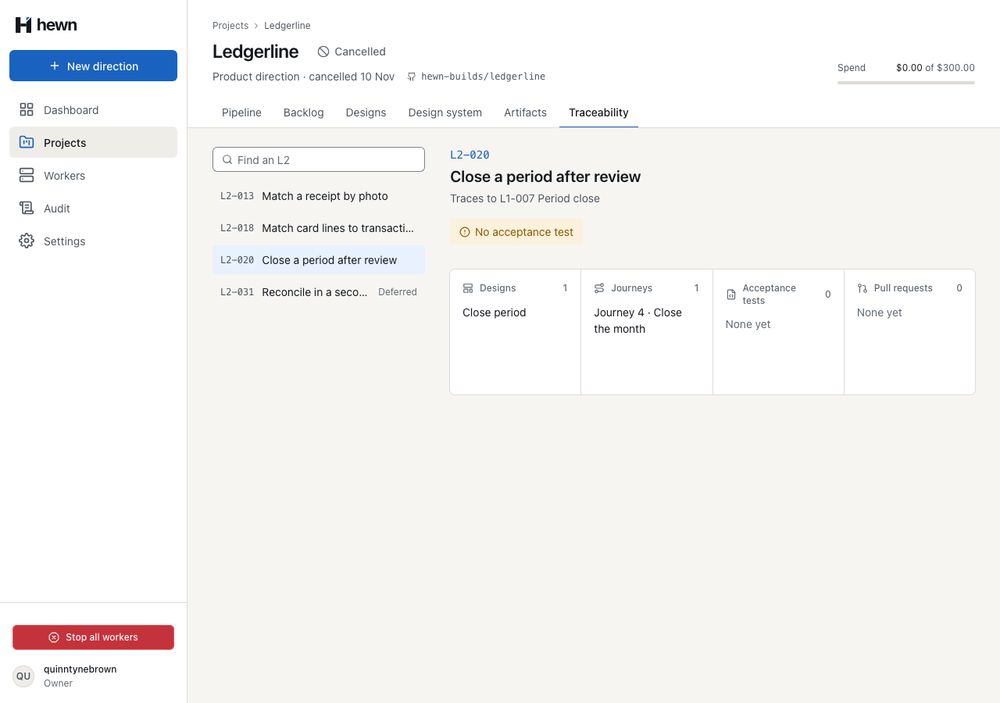
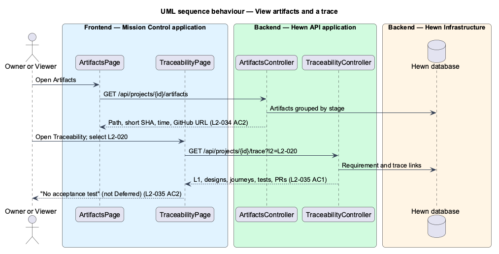
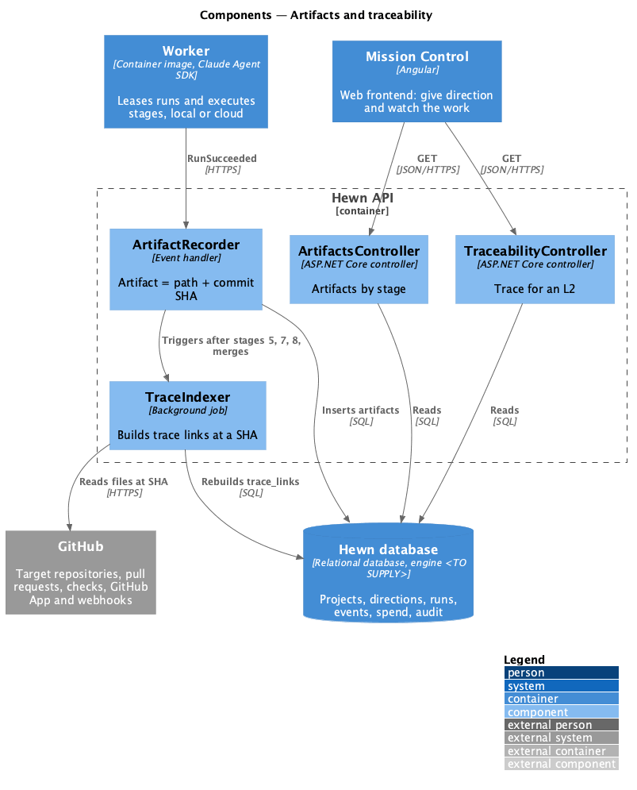
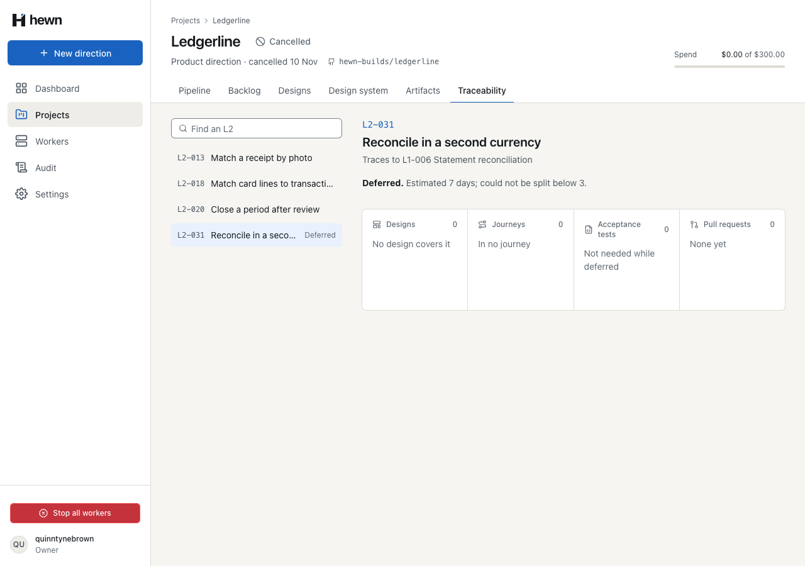
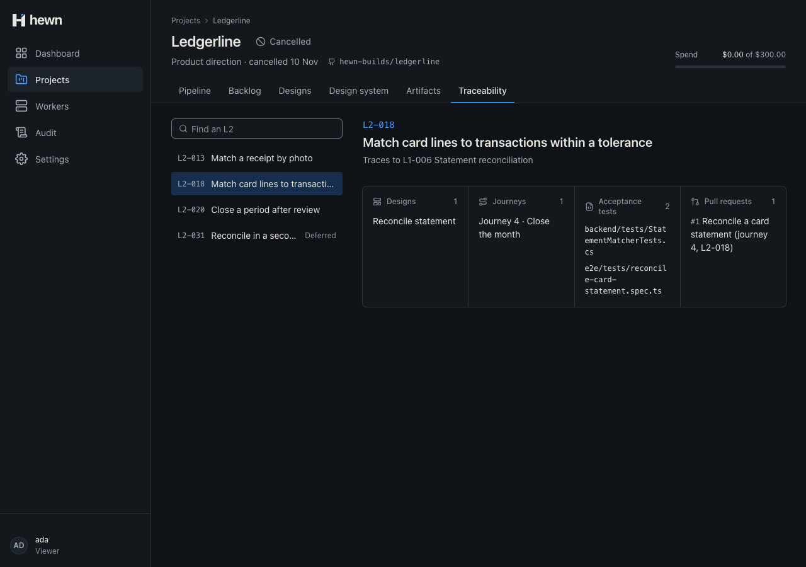
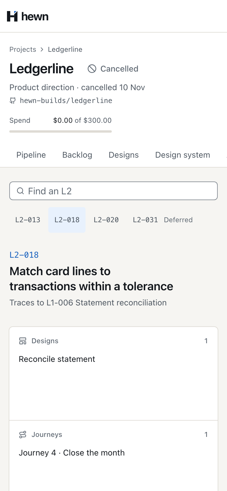
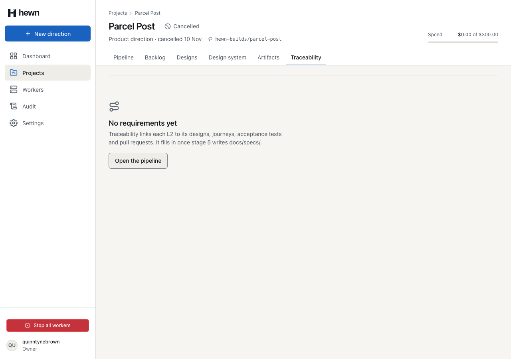
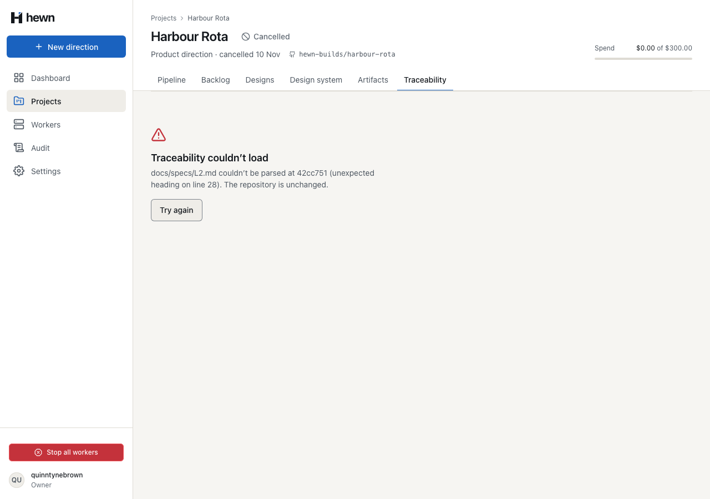

Every L2, through designs, journeys, tests and pull requests.




Snapshot snapshot;
IReadOnlyList<PullRequestInfo> pulls;
try
{
await using var archive = await gitHub.DownloadArchiveAsync(owner, name, cancellationToken);
snapshot = await ReadAsync(archive, cancellationToken);
pulls = snapshot.Files.ContainsKey(L2Path) ? await gitHub.ListPullRequestsAsync(owner, name, cancellationToken) : [];
}
catch (Exception e) when (e is GitHubException or InvalidDataException or FormatException)
{
"commit": "f25478d",
"requirements": [
{
"id": "L2-001",
"title": "Sign in",
…
if (!line.StartsWith("## L2-", StringComparison.Ordinal))
{
continue;
}
var heading = L2Heading().Match(line);
if (!heading.Success || entries.Any(e => e.Id == heading.Groups["id"].Value))
{
var why = heading.Success ? $"{heading.Groups["id"].Value} appears twice" : "unexpected heading";
throw new GitHubException($"{L2Path} couldn’t be parsed at {commit ?? "the head"} ({why} on line {i + 1})");
}
string? l1 = null, deferred = null;
var requirements = l2s.Select(l2 =>
{
var named = NamesId(l2.Id);
var tested = tests.Where(t => t.Ids.Contains(l2.Id)).Select(t => t.Path).ToList();
return new RequirementTraceDto(
l2.Id,
l2.Title,
l2.L1 is { } l1 ? new ParentRequirementDto(l1, l1s.GetValueOrDefault(l1, string.Empty)) : null,
l2.Deferred,
tested.Count == 0 && l2.Deferred is null,
[.. designs.Where(d => named.IsMatch(d.Value)).Select(d => new TracedDesignDto(d.Title, d.Path))],
[.. journeys.Where(j => named.IsMatch(j.Text)).Select(j => new TracedJourneyDto(j.Number, j.Title))],
tested,
[.. pulls.Where(p => named.IsMatch(p.Title)).OrderBy(p => p.Number).Select(p => new TracedPullRequestDto(p.Number, p.Title, p.Url, p.Merged))]);
}).ToList();
private static HashSet<string> TracedIds(string text)
{
var ids = new HashSet<string>(StringComparer.Ordinal);
foreach (var line in text.Split('\n').Take(HeaderLines))
{
if (TestHeader().Match(line) is { Success: true } header)
{
ids.UnionWith(L2Id().Matches(header.Groups["ids"].Value).Select(m => m.Value));
}
}
return ids;
}
/// <summary>An ID matched whole, so L2-001 is not found in L2-0010.</summary>
private static Regex NamesId(string id) => new($@"(?<![\w-]){Regex.Escape(id)}(?!\d)", RegexOptions.CultureInvariant);

@if (r.deferred !== null) {
<p class="text-sm text-muted mt-4">
<strong style="color: var(--color-fg-default)">Deferred.</strong> {{ r.deferred }}.
</p>
} @else if (r.noAcceptanceTest) {
<p class="pill pill--warn mt-4">
<svg hw-icon name="errorCircle" class="icon--sm"></svg> No acceptance test
</p>
}
public async Task An_L2_with_no_test_is_marked_No_acceptance_test_unless_it_is_Deferred()
{
var (owner, projectId) = await ProjectAsync();
var trace = await TraceabilityAsync(owner, projectId);
// Named after line 20 of a test, or in a document, is not a Traces to: header.
var close = Requirement(trace, "L2-003");
Assert.Empty(close.GetProperty("tests").EnumerateArray());
Assert.True(close.GetProperty("noAcceptanceTest").GetBoolean());
Assert.Equal(JsonValueKind.Null, close.GetProperty("deferred").ValueKind);
var currency = Requirement(trace, "L2-004");
Assert.Equal("Estimated 7 days; could not be split below 3", currency.GetProperty("deferred").GetString());
Assert.Empty(currency.GetProperty("tests").EnumerateArray());
Assert.False(currency.GetProperty("noAcceptanceTest").GetBoolean());
await traceability.open(projectId, 'L2-001');
await expect(traceability.id).toHaveText('L2-001');
await expect(traceability.l1).toHaveText(/^Traces to L1-001 \S/);
await expect(traceability.column('Designs').count).toHaveText('1');
await expect(traceability.column('Journeys').items).toHaveText([/^Journey 1 · /]);
await expect(traceability.column('Acceptance tests').items.first()).toHaveText(/\S+\.spec\.ts$/);
await expect(traceability.column('Pull requests').items).toHaveText([/^#\d+\s+.+\(journey 1, L2-001\)$/]);
await expect(traceability.noAcceptanceTest).toHaveCount(0);
6 new, through the real API and fake GitHub
search, no match, L1 line, empty columns
5 behaviour, 1 live, 6 visual, 6 a11y



